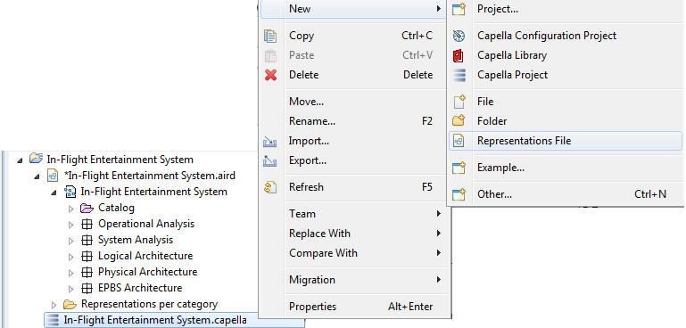
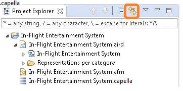

By default, the Semantic Browser is always synchronized with the current selection in the Diagram Editor or in the Project Explorer.
However, with big models and diagrams, performing all the requests might introduce lag between selections of graphical elements and make the whole environment significantly less reactive. It is possible to deactivate this synchronization, toggling off the related toolbar view button , and only relying on the F9 shortcut when needed. To work with Semantic Browser with better performance, it is possible to deactivate the Show diagram /Show Pattern options since computation of all related diagrams and pattern instances for an element is time-consuming.
Rely on manual refreshing of diagrams instead of on automatic one. In Capella main menu, select Window\Preferences\Sirius and deactivate “Do refresh on representation opening” & “Automatic Refresh” options.
When necessary, update representations refreshing them manually with diagram toolbar button
 .
.

In order to avoid the systematic unfolding of element trees, select Window\Preferences\Capella\Transfer Viewer in the main menu and deactivate all choices in “Multiple Selection Dialog” and in “Single Selection Dialog”.
In order to show up the dialog faster, it is recommended for huge models to disable the label computation for model elements. Instead of the custom label, the name of the element will be displayed. When the object is not a named element, its meta-class name will be displayed.

Hiding technical and “useless” elements in the tree helps have a clearer vision of the model main elements.
In the Project Explorer view toolbar \Customize View…\Filters, check technical model elements to be hidden.

Unsynchronizing diagrams allows a better control on the elements that are displayed. For example, one should consider unsynchronizing a diagram instead of relying too much on the “Hide Element” functionality. Note that hidden elements are saved in representation and, if they are not necessary and never unmasked, they make aird files significantly and degrade performances at diagram opening.
Check “Unsynchronized” option by right clicking on diagram background: Additional palette tools will appear to insert new diagram elements which would be automatically inserted in default “Synchronized” mode (e.g. Functional Exchanges in dataflow diagrams …).
In “Unsynchronized” mode, diagrams are updated step by step using additional palette tools: It avoids having to hide some elements afterwards. For example, when a diagram is unsynchronized, the Ports of a Function will not be displayed automatically.
See dedicated User Manual section Advanced Management of Diagrams.

Capella html documentation add-on generates too many external files in a SCM context. It is advised to run this generation outside a SCM context in order to avoid Capella ClearCase adapter freeze. However the result can be zipped and added to source control.
Moreover, during documentation generation within workspace, one should temporally disable SCM synchronization delay in main toolbar \Window\Preferences\Capella\SCM.

In ClearCase SCM context, local snapshot views avoid network delays occurring with dynamic views.
See dedicated Model Configuration Management guidelines
Fragment Capella models to avoid Capella files (*.capella, *.aird, *.capellafragment, *.airdfragment) to be larger than about 50 MB.
When a Capella starts, Java Virtual Machine gets some memory from Operating System. Java Virtual Machine or JVM uses this memory for all its need and part of this memory is called Java Heap Memory. Whenever we create object using new operator or by any another means, object is allocated memory from Heap and when object dies or garbage collected, memory goes back to Heap space in Java.
| JVM Option | Meaning | Default Value |
|---|---|---|
| Xms | Initial java heap size | 1000m |
| Xmx | Maximum java heap size | 3000m |
You can always adapt these values to your machine specification and model size, by modifying the capella.ini file.
A different approach is to create a new shortcut of capella.exe and pass the updated arguments and values directly in the target field of its properties like so: -vm "C:\...\Java\...\bin\javaw.exe" -clean -vmargs -Xms128m –Xmx1208m.
Each thread in the JVM get’s a stack. The stack size will limit the number of threads that you can have. Using a too big stack size will augment the risk to run into an out of memory exception as each thread is allocated more memory than it needs.
| JVM Option | Meaning | Default Value |
|---|---|---|
| Xss | Stack size for each thread | 4m |
In case your model contains nested elements on a lot of levels, a StackOverFlow exception can occur in functional transition for example (see the “Error Log” view). To avoid this, you can increase the stack size. Please check the previous Heap Size section for more information in regards to the file that you should modify.
Create separated representation analysis (aird files) and isolate Table representation.

This view may cause performance issues on big diagrams. It can be closed and reopen when necessary through Capella main toolbar \Window\Show View.

The Outline view can be hidden at Capella initialization using the preference /instance/org.polarsys.capella.core.preferences/hide.view.outline=true in an preference file.
(look at Capella Guide / User Manual / Workbench Basics / Capella Configurability)
For instance, disable temporally pattern, cycles checks or others, in the main menu Window\Preferences\Model Validation\Constraints.

Capella main toolbar \Window\Preferences\Capella and deactivate “Check model version at load time” option.

In Capella main menu, open Window\Preferences\MDE Reporting and deactivate some choices.

Disabled by default.
In Capella main menu Window\Preferences\Capella\Model Change Recorder, deactivate “Activate model change recording”.

In Capella main menu \Window\Preferences\Capella\Delete, deactivate option “Confirm deletions”.

Disabled by default.
